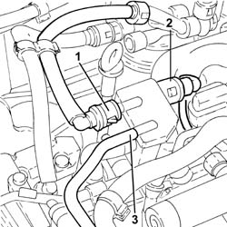
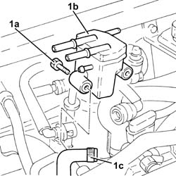
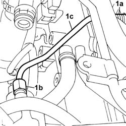
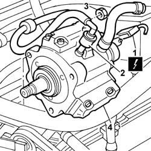
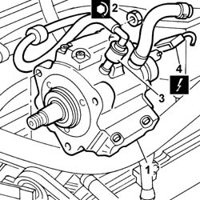
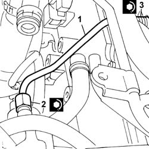

1060E10 PRESSURE PUMP for diesel injection - R.R.
- Path
- Procedures > 10 ENGINE > 1060 DIESEL FUEL INJECTION SYSTEM > 1060E DIESEL PRESSURE PUMP > 1060E10 PRESSURE PUMP for diesel injection - R.R.
- Kind
- repair procedure (removal / refitting; the operation number is the code)
- Applies to
- engines: 2.4 JTD 20V; all production periods
- Interactive page
- https://sloeber94.github.io/elrnDB-lThss/en/#/850510
Applies to: engines: 2.4 JTD 20V; all production periods
 Removing
Removing
 Refitting
Refitting- Position the vehicle on a lift.
- Open the boot and disconnect the negative battery terminal.
See in Op. 7055B54 PROTECTION/GUARD under engine - R.R.
See in Op. 4450B04 Right FRONT WHEEL (one) - R.R.
See in Op. 7055B42 FRONT WHEEL ARCH LINER (one), left or right - R.R.
See in Op. 7055B64 Engine compartment DUST SEAL in front wheel arch (one), left or right - R.R.
See in Op. 1016A10 SOUND-PROOFING COVER - R.R.
See in Op. 7040D50 ENGINE COMPARTMENT UPPER SOUND INSULATION SHIELD - R.R.
See in Op. 1048B44 RIGID air supply PIPE from heat exchanger to intake manifold - R.R.
See in Op. 1048A56 UPPER RESONATOR - R.R.
See in Op. 1092G10 Engine components single drive BELT - R.R.
See in Op. 1092G21 Engine components single belt FIXED TENSIONER - R.R. with belt removed
See in Op. 1092A10 Crankshaft PULLEY - R.R.
See in Op. 1032D12 Timing system protective COVER(S) - R.R.
See in Op. 1032B10 TOOTHED timing BELT - R.R. for timing adjustment or replacement
See in Op. 1060E30 PRESSURE PUMP drive PULLEY - R.R.
1. Disconnect the rapid connector for the fuel return pipe from the fuel filter, fuel return manifold pipe side.
2. Disconnect the rapid connector for the fuel return pipe to the tank, fuel return manifold pipe side.
3. Disconnect the pipe from the injectors to the fuel return manifold pipe, fuel return manifold pipe side.

Applies to: engines: 2.4 JTD 20V; all production periods
1. Undo the bolts (1a) and remove the fuel return manifold pipe (1b) after having disconnected the pressure pump fuel return pipe (1c) from the latter.

Applies to: engines: 2.4 JTD 20V; all production periods
1. Undo the connectors (1a), (1b) and remove the pipe from the pressure pump to the fuel manifold (1c).

Applies to: engines: 2.4 JTD 20V; all production periods
1. Disconnect the electrical connection for the fuel pressure regulator.
 | Description | Connector |
|---|---|---|
1 | Fuel pressure regulator | N077 |
2. Disconnect the fuel supply pipe from the tank from the pressure pump.
3. Undo the nuts fixing the pressure pump to the mounting.
4. Remove the pressure pump.

Applies to: engines: 2.4 JTD 20V; all production periods
Refitting
Removing1. Fit the pressure pump fastening it to the studs on the pump mounting.
2. Tighten the fixing nuts to torque.
 | Value - daNm | Fastening | Component | Ø |
|---|---|---|---|---|
2 | 2.5 | Nut | PRESSURE PUMP | M8 |
3. Connect the fuel supply pipe from the tank to the pressure pump.
4. Connect the electrical connection for the fuel pressure regulator.
| Description | Connector |
|---|---|---|
4 | Fuel pressure regulator | N077 |

Applies to: engines: 2.4 JTD 20V; all production periods
1. Fit a new pipe from the pressure pump to the single fuel manifold in its housing and secure it using the connectors without tightening them.
2. Tighten the connector for the pipe from the pressure pump to the single fuel manifold, pump side, to the recommended torque using a spanner.
| Value - daNm | Fastening | Component | Ø |
|---|---|---|---|---|
2 | (pump side) 2.3 | Connector | PRESSURE PUMP LINE TO FUEL MANIFOLD | M14X1.5 |
3. Tighten the connector for the pipe from the pressure pump to the single fuel manifold, fuel manifold side, to the recommended torque using a spanner.
| Value - daNm | Fastening | Component | Ø |
|---|---|---|---|---|
3 | (manifold side) 2.3 | Connector | PRESSURE PUMP LINE TO FUEL MANIFOLD | M14X1.5 |

Applies to: engines: 2.4 JTD 20V; all production periods
- Connec the fuel return pipe from the pressure pump to the fuel return manifold pipe.
- Fit the fuel return manifold pipe and secure it using the bolts.
- Connect the pipe from the injectors to the fuel return manifold pipe, fuel return manifold pipe side.
- Connect the rapid connector for the fuel return pipe to the tank, fuel return manifold pipe side.
- Connect the rapid connector for the fuel return pipe from the fuel filter, fuel return manifold pipe side.
See in Op. 1060E30 PRESSURE PUMP drive PULLEY - R.R.
See in Op. 1032B10 TOOTHED timing BELT - R.R. for timing adjustment or replacement
See in Op. 1032D12 Timing system protective COVER(S) - R.R.
See in Op. 1092A10 Crankshaft PULLEY - R.R.
See in Op. 1092G21 Engine components single belt FIXED TENSIONER - R.R. with belt removed
See in Op. 1092G10 Engine components single drive BELT - R.R.
See in Op. 1048A56 UPPER RESONATOR - R.R.
See in Op. 1048B44 RIGID air supply PIPE from heat exchanger to intake manifold - R.R.
See in Op. 7040D50 ENGINE COMPARTMENT UPPER SOUND INSULATION SHIELD - R.R.
See in Op. 1016A10 SOUND-PROOFING COVER - R.R.
See in Op. 7055B64 Engine compartment DUST SEAL in front wheel arch (one), left or right - R.R.
See in Op. 7055B42 FRONT WHEEL ARCH LINER (one), left or right - R.R.
See in Op. 7055B54 PROTECTION/GUARD under engine - R.R.
See in Op. 4450B04 Right FRONT WHEEL (one) - R.R.
- Top up the engine coolant, following the instructions in the description:
See in Op. 0010T21 ENGINE COOLANT - Check density and top up if necessary
- Connect the negative battery terminal.
- Remove the vehicle from the lift.
Topics linked from this page (15)
- 0010T21 ENGINE COOLANT - Check density and top up if necessary
- 1016A10 SOUND-PROOFING COVER - R.R.
- 1032B10 TOOTHED timing BELT - R.R. for timing adjustment or replacement
- 1032D12 Timing system protective COVER(S) - R.R.
- 1048A56 UPPER RESONATOR - R.R.
- 1048B44 RIGID air supply PIPE from heat exchanger to intake manifold - R.R.
- 1060E30 PRESSURE PUMP drive PULLEY - R.R.
- 1092A10 Crankshaft PULLEY - R.R.
- 1092G10 Engine components single drive BELT - R.R.
- 1092G21 Engine components single belt FIXED TENSIONER - R.R. with belt removed
- 4450B04 Right FRONT WHEEL (one) - R.R.
- 7040D50 ENGINE COMPARTMENT UPPER SOUND INSULATION SHIELD - R.R.
- 7055B42 FRONT WHEEL ARCH LINER (one), left or right - R.R.
- 7055B54 PROTECTION/GUARD under engine - R.R.
- 7055B64 Engine compartment DUST SEAL in front wheel arch (one), left or right - R.R.